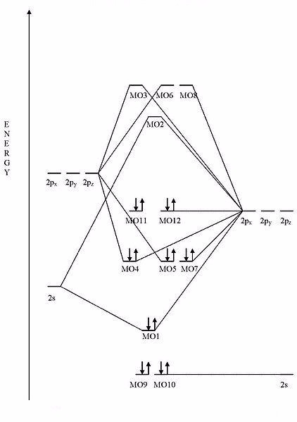
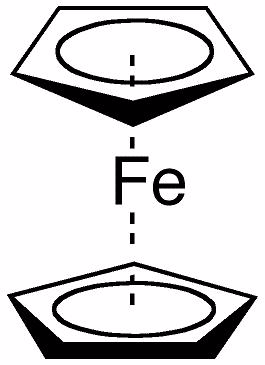
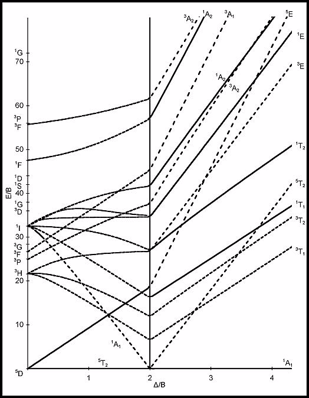
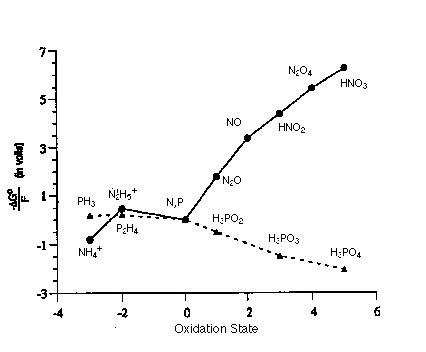

1
An improper rotation axis, S, arises from which of the following situations?
Choose one answer.
| a. A mirror plane combined with an inversion | ||
| b. Two proper rotation axes combined | ||
| c. Identity combined with a mirror plane | ||
| d. A proper rotation axis combined with a mirror plane | ||
| e. The combination of two mirror planes |
Question
2
Choose the best answer to fill in the blanks. Raman activity is dictated by a change in the _____________ of a molecule, while IR activity is related to a
change in the ____________.
Choose one answer.
| a. Polarizability, dipole moment | ||
| b. Magnetism, dipole moment | ||
| c. Symmetry, magnetism | ||
| d. Dipole moment, polarizability | ||
| e. Magnetism, symmetry |
Question
3
Dodecaborate (B12H12) does NOT contain which of the following symmetry elements?
Choose one answer.
| a. E | ||
| b. C5 | ||
| c. i | ||
| d. S10 | ||
| e. C6 |
Question
4
Fill in the blank. The character table for a C3v molecule, such as PCl3, lists three symmetry labels: A1, A2,
and E. The A1 mode transforms z, z2, and x2 + y2. This means that the A1 mode is ________________.
Choose one answer.
| a. IR active only | ||
| b. Raman active only | ||
| c. Both IR and Raman active | ||
| d. Neither IR or Raman active | ||
| e. The only spectroscopically active mode in the molecule |
Question
5
Fill in the blank. The character table for a D3h ion, such as CO32-, lists six symmetry labels: A1',
A2', E', A1'', A2'', and E''. The A2' mode transforms Rz. This means that the A2' mode is
_________________.
Choose one answer.
| a. IR active only | ||
| b. Raman active only | ||
| c. Both IR and Raman active | ||
| d. Neither IR or Raman active | ||
| e. The only spectroscopically active mode in the molecule |
Question
6
In symmetry terms, which of the following MUST be true for an allowed transition?
Choose one answer.
| a. Both the electronic and vibrational representations must be symmetric. | ||
| b. Both the electronic and vibrational representations must be asymmetric. | ||
| c. Only the electronic representations must be symmetric. | ||
| d. Only the vibrational representations must be symmetric. | ||
| e. Symmetry does not matter, as long as there is a change in dipole or polarizability. |
Question
7
Symmetry elements within a group must display which of the following?
Choose one answer.
| a. Closure (If A and B belong to the group, and A x B = C, then C also belongs to the group.) | ||
| b. Associativity (A(BC) = (AB)C ) | ||
| c. Identity (The symmetry element times its identity, E, remains unchanged.) | ||
| d. Inverses (There must be an inverse symmetry element that returns the molecule to its original state; A x A-1 = E.) | ||
| e. Continuity (If a molecule contains an n axis, then it also contains axes of n-1, n-2...) |
Question
8
Using the flow chart provided, determine which point group a tennis ball would belong to.
Terms of Use: This image is licensed under a Creative Commons Attribution-Noncommercial-Share Alike 3.0 United States License. It is attributed to UC Davis ChemWiki by University of California, Davis. The original version can be found .
Terms of Use: This image is licensed under a Creative Commons Attribution-Noncommercial-Share Alike 3.0 United States License. It is attributed to UC Davis ChemWiki by University of California, Davis. The original version can be found .

Choose one answer.
| a. D2d | ||
| b. Cs | ||
| c. C2h | ||
| d. S4 | ||
| e. D4 |
Question
9
Which of the following has C4v symmetry?
Choose one answer.
| a. H2O | ||
| b. BrF5 | ||
| c. BH3 | ||
| d. PCl6 | ||
| e. W(CO)6 |
Question
10
Which of the following does NOT contain an inversion center?
Choose one answer.
| a. SF6 | ||
| b. O2 | ||
| c. BF3 | ||
| d. C2Cl4 | ||
| e. All of the above |
Question
11
Hydrogen and helium both have two electrons (completely filled) bonding molecular orbitals. Hydrogen exists as a diatomic molecule; helium does not. Why?
Choose one answer.
| a. Helium also has electrons in antibonding orbitals, resulting in a bond order of zero. | ||
| b. Helium also has electrons in non-bonding orbitals, resulting in a bond order of zero. | ||
| c. Helium is a noble gas and never forms bonds. | ||
| d. Hydrogen also has electrons in nonbonding orbitals, resulting in a bond order of two. | ||
| e. Hydrogen has no antibonding orbitals, resulting in a bond order of two. |
Question
12
The bond order of a molecule is given by the equation: ½ (bonding electrons - antibonding electrons). What accounts for the ½?
Choose one answer.
| a. The amount of magnetic character is reduced in bonds. | ||
| b. The electrons are shared between two elements. | ||
| c. Nonbonding electrons decrease bond ability. | ||
| d. The antibonding electrons interfere with bonding. | ||
| e. None of the above |
Question
13
What is the bond order for dinitrogen, N2?
Choose one answer.
| a. 5 | ||
| b. 1 | ||
| c. 1.5 | ||
| d. 2 | ||
| e. 3 |
Question
14
When drawing the MO diagram of a heteronuclear diatomic molecule, at what relative positions should the atomic orbitals appear?
Choose one answer.
| a. They should be at the same energy to indicate bond formation. | ||
| b. They should be at the same energy to indicate allowed symmetry. | ||
| c. They should be at different energies, relative to their difference in electronegativities. | ||
| d. They should be at different energies, relative to their atomic radii. | ||
| e. They should be at different energies, relative to the number of lone pairs of electrons. |
Question
15
When filling molecular orbitals, which of the following is FALSE?
Choose one answer.
| a. A maximum of two electrons per orbital is allowed. | ||
| b. The orbitals with the lowest energy are filled first. | ||
| c. Orbitals of the same energies are half-filled first; then electrons are allowed to pair up. | ||
| d. Non-bonding orbitals are filled first. | ||
| e. All of the above |
Question
16
Which of the following minimizes nucleus-nucleus repulsion and promotes electron-nucleus interaction?
Choose one answer.
| a. Nonbonding molecular orbitals | ||
| b. Antibonding molecular orbitals | ||
| c. Bonding molecular orbitals | ||
| d. All of the above | ||
| e. A and C only |
Question
17
Which of the following must be true when atomic orbitals combine to form molecular orbitals?
Choose one answer.
| a. They must have constructive net interaction. | ||
| b. They must have the correct symmetry to overlap | ||
| c. They must be similar in energy | ||
| d. There will be the same number of resultant molecular orbitals as atomic orbitals | ||
| e. All of the above |
Question
18
Which of the following statements concerning sigma and pi molecular orbitals is FALSE?
Choose one answer.
| a. Sigma interactions occur along the internuclear axis. | ||
| b. Pi interactions occur above and below the internuclear axis. | ||
| c. Sigma bonds form first, followed by the subsequent formation of pi bonds. | ||
| d. Two pi bonds are involved in a double bond. | ||
| e. All of the above |
Question
19
Which of the following statements is true of nonbonding molecular orbitals?
Choose one answer.
| a. They are responsible for the formation of pi bonds. | ||
| b. They are similar in energy to the atomic orbitals. | ||
| c. They counteract bond formation in a molecule. | ||
| d. They help hold the molecule together, once it is formed. | ||
| e. They are responsible for the formation of sigma bonds. |
Question
20
What compound is represented by this MO diagram? (Pay attention to the number of electrons and their respective energies.)
Terms of Use: The image below is licensed under the Creative Commons Attribution-Share Alike 3.0 Unported license. It is attributed to Wikipedia user Tjb26. The original version can be found .

Terms of Use: The image below is licensed under the Creative Commons Attribution-Share Alike 3.0 Unported license. It is attributed to Wikipedia user Tjb26. The original version can be found .
Choose one answer.
| a. CO2 | ||
| b. H2O | ||
| c. CN- | ||
| d. Cl2 | ||
| e. N2 |
Question
21
1s22s22p63s23p63d5 is the electron configuration for which element/ion?
Choose one answer.
| a. Mn2+ | ||
| b. V | ||
| c. Fe3+ | ||
| d. All of the above | ||
| e. A and C only |
Question
22
According to valence bond theory(VBT), O2 has no unpaired electrons. MO theory shows two unpaired electrons in a 2π* molecular orbital. Which of
the following experiments supports the correct electron configuration?
Choose one answer.
| a. An EPR spectrum shows that oxygen is paramagnetic; MO theory is correct. | ||
| b. An EPR spectrum shows that oxygen is paramagnetic; VBT is correct. | ||
| c. Infrared spectroscopy shows a double bond stretch; MO theory is correct. | ||
| d. Infrared spectroscopy shows a double bond stretch; VBT is correct. | ||
| e. There is no way to know which theory is correct in this matter. |
Question
23
According to valence bond theory, what is the difference between a complex with d2sp3 hybridization and sp3d2
hybridization?
Choose one answer.
| a. There is no actual difference; the orbitals involved are the same, only listed in a different order. | ||
| b. The complex having d2sp3 hybridization is an "inner shell" complex, while the complex with sp3d2 hybridization is an "outer shell" complex. | ||
| c. The complex having d2sp3 hybridization is an "outer shell" complex, while the complex with sp3d2 hybridization is an "inner shell" complex. | ||
| d. The complex having sp3d2 hybridization does not exist; the electrons must fill the lowest energy orbitals first. | ||
| e. The complex having d2sp3d2 hybridization does not exist; the electrons must fill the orbitals with the same principle quantum number. |
Question
24
Analysis of a high spin d6 complex reveals that it is diamagnetic. What is the probable molecular geometry of the complex?
Choose one answer.
| a. Octahedral | ||
| b. Tetrahedral | ||
| c. Square planar | ||
| d. All of the above | ||
| e. Both A and C |
Question
25
Compounds with octahedral molecular geometries sometimes elongate or compress through Jahn-Teller distortion. In doing so, which of the following occurs?
Choose one answer.
| a. They increase their ionization potential, rendering them most useful electrochemically. | ||
| b. They reduce degenerate molecular orbitals, allowing a more stable molecule to exist. | ||
| c. They undergo a strong magnetic transition, allowing easier detection by NMR and EPR. | ||
| d. They increase their transition state energy, making them useful catalysts. | ||
| e. They decrease shielding, allowing spectroscopically forbidden transitions to occur. |
Question
26
Do high spin d5 octahedral complexes experience Jahn-Teller distortion? Why, or why not?
Choose one answer.
| a. Yes. The five electrons distribute themselves evenly in the five molecular orbitals, causing them to be degenerate. Axial elongation reduces this degeneracy. | ||
| b. Yes. The five electrons distribute themselves evenly in the five molecular orbitals, causing them to be degenerate. Axial compression reduces this degeneracy. | ||
| c. No. The five electrons distribute themselves evenly in the five molecular orbitals; no degeneracy exists. | ||
| d. No. Four of the electrons are paired. Only one electron is unpaired and can only fill the one remaining orbital. No degeneracy exists. | ||
| e. Yes. Four electrons are paired in the lower energy orbitals. The fifth electron can position itself into any of the remaining three orbitals, making it triply degenerate. |
Question
27
Ferrocene consists of two cyclopentadienyl rings bound through 5 carbons to an iron center. What is the IUPAC name for ferrocene?
Terms of Use: The image below is licensed under the .

Terms of Use: The image below is licensed under the .
Choose one answer.
| a. mer-bis(cyclopentadienyl)iron(II) | ||
| b. fac-bis(cyclopentadienyl)iron(II) | ||
| c. bis(η5-cyclopentadienyl)iron(II) | ||
| d. µ-bis(cyclopentadienyl)iron(II) | ||
| e. (η5-cyclopentadienyl)iron(II) |
Question
28
How would the complexes Λ-[Co(en)3]3+ and Δ-[Co(en)3]3+ differ?
Choose one answer.
| a. One would be a solid at room temperature, while the other would be a liquid. | ||
| b. One would be highly colored, while the other would be colorless. | ||
| c. One would be paramagnetic, while the other would be diamagnetic. | ||
| d. One would rotate plane-polarized light clockwise, while the other would rotate it counterclockwise. | ||
| e. All of the above |
Question
29
In chromium and copper, the 3d orbital fills before the 4s orbital is filled. Why?
Choose one answer.
| a. Because the stability gained from having a fully-filled or evenly, half-filled set of d orbitals is greater than the need to fill all lower energy orbitals first | ||
| b. Because the 3d orbital is actually lower in energy than the 4s, so it fills first | ||
| c. Because copper and chromium only exist as ions; never as neutral elements | ||
| d. Because the atomic radii are so large that no effect is felt by the nucleus | ||
| e. None of the above |
Question
30
Phosphines are often used as molecular bridges between two metal centers. How should these phosphines be notated according to IUPAC nomenclature?
Choose one answer.
| a. mu (µ) | ||
| b. eta (η) | ||
| c. chi (χ) | ||
| d. xi (ξ) | ||
| e. zeta (ζ) |
Question
31
Transition metals exhibit all of the following general characteristics, EXCEPT:
Choose one answer.
| a. They are malleable and ductile. | ||
| b. They have high melting points. | ||
| c. They conduct heat and electricity. | ||
| d. They are lustrous. | ||
| e. They undergo irreversible oxidation. |
Question
32
Using ligand field theory, which of the following would you predict to be the most paramagnetic?
Choose one answer.
| a. A low spin, d5 octahedral complex | ||
| b. A high spin, d8 octahedral complex | ||
| c. A low spin, d3 octahedral complex | ||
| d. A d2 tetrahedral complex | ||
| e. A d5 square planar complex |
Question
33
Using the valence bond theory and the 18 electron rule, which of the following would you predict to be the most stable?
Choose one answer.
| a. Fe(CO)5 | ||
| b. Ni(CO)5 | ||
| c. Mo(CO)6 | ||
| d. Re(CO)6 | ||
| e. Ir(CO)5 |
Question
34
What happens when the electron pairing energy is larger than the octahedral field splitting energy?
Choose one answer.
| a. The result is a low-spin complex, where electrons will pair up and fill the lowest energy level. | ||
| b. The result is a high-spin complex, where electrons will be promoted to the next energy level before pairing. | ||
| c. The result is an unstable complex, where electrons can either pair or be promoted to the next energy level. | ||
| d. The result is a high-spin complex, where electrons will pair up and fill the lowest energy level. | ||
| e. The result is a low-spin complex, where electrons will be promoted to the next energy level before pairing. |
Question
35
Which of the following has T-shaped molecular geometry?
Choose one answer.
| a. BF3 | ||
| b. ClF3 | ||
| c. PF6 | ||
| d. IF5 | ||
| e. SbF5 |
Question
36
Which of the following influences the amount of crystal field splitting in a metal complex?
Choose one answer.
| a. Charge of the metal ion | ||
| b. Nature of the ligands | ||
| c. Geometry of the complex | ||
| d. Size of the ligands | ||
| e. All of the above |
Question
37
Which of the following sets of complexes represents a set of stereoisomerism (not structural isomerism)?
Choose one answer.
| a. [PtCl(H2O)3]Br and [Pt(Br)(H2O)3]Cl | ||
| b. cis-[PtCl2(NH3)2] and trans-[PtCl2(NH3)2] | ||
| c. [CrCl2(H2O)4]Cl•2H2O and [CrCl3(H2O)3]•3H2O | ||
| d. [Co(NH3)6] [Cr(ac)3] and [Co(ac)3] [Cr(NH3)6] | ||
| e. [Co(SCN)(NH3)5]- and [Co(NCS)(NH3)5]- |
Question
38
Which of the following would have the largest ionization energy?
Choose one answer.
| a. Copper | ||
| b. Iron | ||
| c. Gold | ||
| d. Titanium | ||
| e. Tungsten |
Question
39
You discover a new metal complex that exhibits high spin characteristics. What ligand properties can you predict?
Choose one answer.
| a. It is highly polarizable. | ||
| b. The ligand is relatively large. | ||
| c. The ligand exhibits π donor ability. | ||
| d. The ligand is acidic. | ||
| e. All of the above |
Question
40
Which of the following would have the highest melting point?
Choose one answer.
| a. Silver | ||
| b. Rhodium | ||
| c. Cadmium | ||
| d. Molybdenum | ||
| e. The melting points would be equivalent, because they are in the same period. |
Question
41
If a complex has a maximum absorption at 423 nm, what color would the complex appear to the human eye?
Choose one answer.
| a. Violet | ||
| b. Blue | ||
| c. Green | ||
| d. Yellow | ||
| e. Red |
Question
42
Some tetrahedral metal complexes exhibit weak electronic transitions even though they are symmetry forbidden. Why?
Choose one answer.
| a. Jahn-Teller distortion | ||
| b. Mixing of the p and d orbitals | ||
| c. MLCT | ||
| d. LMCT | ||
| e. All of the above |
Question
43
The UV spectrum of metal complex A has a strong absorption at 412 nm. The UV spectrum of metal complex B has a strong absorption at 654 nm. If equal
quantities of the two solutions of metal complexes are mixed, what would the resulting UV spectrum look like?
Choose one answer.
| a. The spectrum would show one very broad absorption band at 533 nm. | ||
| b. The spectrum would show two weak absorption bands, one at 412 nm and the other at 654 nm. | ||
| c. The spectrum would show two strong absorption bands, one at 412 nm and the other at 654 nm. | ||
| d. The spectrum would show two weak absorption bands, one at 472 nm and the other at 594 nm. | ||
| e. The spectrum would show two strong absorption bands, one at 472 nm and the other at 594 nm. |
Question
44
The vertical line (located at Δ/B = 2 for a d6 system) in the Tanabe-Sugano diagram corresponds to which of the following?
Terms of Use: This image is licensed under a Creative Commons Attribution-Noncommercial-Share Alike 3.0 United States License. It is attributed to UC Davis ChemWiki by University of California, Davis. The original version can be found .

Terms of Use: This image is licensed under a Creative Commons Attribution-Noncommercial-Share Alike 3.0 United States License. It is attributed to UC Davis ChemWiki by University of California, Davis. The original version can be found .
Choose one answer.
| a. The ligand field stabilization energy (LFSE) is insufficient to allow transitions to the left of the line. | ||
| b. The transitions to the left are symmetry allowed, while the transitions to the right are spin allowed. | ||
| c. The transitions to the left are spin allowed, while the transitions to the right are symmetry allowed. | ||
| d. The transitions to the left are low-spin complexes, while the transitions to the right are high-spin complexes. | ||
| e. The transitions to the left are high-spin complexes, while the transitions to the right are low-spin complexes. |
Question
45
Using the spin selection rules and the Tanabe-Sugano diagram provided, how many electronic transitions would you expect to see in the spectrum of a
d8 complex if Δ/B = 1.5?
Terms of Use: This image is licensed under a .
Terms of Use: This image is licensed under a .

Choose one answer.
| a. Two | ||
| b. Three | ||
| c. Nine | ||
| d. Six | ||
| e. Zero |
Question
46
Which of the following is true with regard to charge transfer (ligand-to-metal or metal-to-ligand) absorption bands in relation to d-d transition bands?
Choose one answer.
| a. CT absorptions occur at higher wavelengths than d-d transitions. | ||
| b. CT absorptions are less intense than d-d transitions. | ||
| c. CT transitions are symmetry and spin allowed; d-d transitions are symmetry forbidden. | ||
| d. CT transitions are spin allowed; d-d transitions are spin forbidden. | ||
| e. CT transitions are symmetry and spin forbidden; d-d transitions are symmetry forbidden but spin allowed. |
Question
47
Which of the following would be a spin allowed transition?
Choose one answer.
|
a. 3T1 |
||
|
b. 5E |
||
|
c. 3T1 |
||
|
d. 1A2 |
||
|
e. 4T2 |
Question
48
Why are the hexaaqua complexes of Sc3+ and Zn+2 colorless, while the hexaaqua complexes of Fe2+, Cr3+,
Co2+, Ni2+, and Cu2+ are intensely colored?
Choose one answer.
| a. Zn2+ has a completely filled d orbital, and Sc3+ has a completely empty d orbital. | ||
| b. Zn2+ and Sc3+ always form high spin octahedral complexes. | ||
| c. Zn2+ and Sc3+ always form low spin octahedral complexes. | ||
| d. Zn2+ and Sc3+ are diamagnetic; the others are paramagnetic. | ||
| e. Zn2+ and Sc3+ are paramagnetic; the others are diamagnetic. |
Question
49
Why does a high spin d5 octahedral complex exhibit a very pale color, while a low spin d5 octahedral complex is more highly colored?
Choose one answer.
| a. The transition in the high spin complex is symmetry and spin forbidden. The transition in the low spin complex is symmetry allowed. | ||
| b. The transition in the high spin complex is symmetry and spin forbidden. The transition in the low spin complex is spin allowed. | ||
| c. The transition in the high spin complex is symmetry forbidden but spin allowed. The transition in the low spin complex is symmetry and spin allowed. | ||
| d. The transition in the high spin complex is spin forbidden but symmetry allowed. The transition in the low spin complex is symmetry and spin allowed. | ||
| e. The transition in the high spin complex is symmetry and spin forbidden. The transition in the low spin complex is symmetry and spin allowed. |
Question
50
You have two solutions of chromium ions. Your lab partner has added potassium thiocyanate to one and potassium cyanide to the other, but does NOT remember
which one contains which anion. Just by appearance, how can you tell them apart?
Choose one answer.
| a. The solution containing cyanide ion will give a larger crystal field splitting, causing a blue shift in the color of the complex. The complex with thiocyanate ion will appear as more red shifted. | ||
| b. The solution containing cyanide ion will give a smaller crystal field splitting, causing a blue shift in the color of the complex. The complex with thiocyanate ion will appear as more red shifted. | ||
| c. The solution containing cyanide ion will give a larger crystal field splitting, causing a red shift in the color of the complex. The complex with thiocyanate ion will appear as more blue shifted. | ||
| d. The solutions will both be similar in color; however, the complex with thiocyanate will be more intense. | ||
| e. You cannot tell them apart; the experiment would need to be restarted. |
Question
51
A 19F NMR spectrum at room temperature reveals on well defined peak. When cooled slightly, the peak becomes broadened. At N2(l)
temperatures, two well defined peaks are apparent. What is responsible for these observations?
Choose one answer.
| a. Dynamic fluxionality | ||
| b. Spin-spin coupling interactions | ||
| c. Integer quantum spin numbers (I = 1,2,3…) | ||
| d. Fractional quantum spin numbers (I = 1/2, 3/2, 5/2) | ||
| e. Low natural abundances of the 19F nucleus |
Question
52
Carbon dioxide is a linear molecule with no dipole moment. Which of the following interactions is responsible for the observed IR spectrum of
CO2?
Choose one answer.
| a. The asymmetric stretch of the C-O bonds creates a dipole moment that is IR active. | ||
| b. The symmetric stretch of the C-O bonds creates a dipole moment that is IR active. | ||
| c. The non-linear bending mode crates a net dipole, which is IR active. | ||
| d. All of the above | ||
| e. A and C only |
Question
53
In NMR spectroscopy, what happens to the chemical shift and resonance frequency of a compound when the spectrometer frequency changes?
Choose one answer.
| a. The chemical shift and resonance frequency also change. | ||
| b. The chemical shift changes; the resonance frequency remains constant. | ||
| c. The chemical shift remains constant; the resonance frequency changes. | ||
| d. The chemical shift and resonance frequency remain constant. | ||
| e. There is no way to predict the effect. |
Question
54
The splitting of energy levels in the presence of a magnetic field is caused by which of the following?
Choose one answer.
| a. The Zeeman effect | ||
| b. Pauli exclusion principle | ||
| c. Symmetry degeneracy | ||
| d. Fermi contact interaction | ||
| e. Bose-Einstein effect |
Question
55
What is the most likely cause of fluxional behavior in the NMR spectrum of Fe(CO)5, iron pentacarbonyl?
Choose one answer.
| a. Dissociation and recoordination of the carbonyl ligands | ||
| b. Rotation of a hindered carbonyl bond | ||
| c. Opening and closing of bridging carbonyls | ||
| d. Isomerism between trigonal bipyramidal and square pyramidal configurations | ||
| e. Monmer-dimer formation with a bridging carbonyl |
Question
56
What molecule most likely produced this EPR spectrum?
Terms of Use: The image below is in the public domain.

Choose one answer.
| a. NO2 radical | ||
| b. CH3 radical | ||
| c. CH2Cl radical | ||
| d. CH2CH2 radical | ||
| e. OH radical |
Question
57
Which of the following cannot be studied by EPR?
Choose one answer.
| a. Paramagnetic transition metal complexes | ||
| b. Diamagnetic transition metal complexes | ||
| c. Free radicals in the solid state | ||
| d. Free radicals in the liquid or gas state | ||
| e. Complexes containing more than one unpaired electron |
Question
58
Which of the following conditions does NOT result in a nonzero quantum spin number (I)?
Choose one answer.
| a. An odd mass number and odd atomic number, such as 1H | ||
| b. An odd mass number and an even atomic number, such as 13C | ||
| c. An even mass number and an even atomic number, such as 16O | ||
| d. An even mass number and an odd atomic number, such as 14N | ||
| e. All of the above situations will result in a nonzero quantum spin number. |
Question
59
Which of the following would be predicted to have a g-factor value close to 2?
Choose one answer.
| a. A free electron | ||
| b. An unpaired electron in an organic molecule | ||
| c. An unpaired electron in a transition metal complex | ||
| d. All of the above | ||
| e. A and B only |
Question
60
Why does Re(CO)5Cl exhibit lower carbonyl stretching frequencies (νco) than [Re(CO)5(py)]+?
Choose one answer.
| a. Cationic metal complexes experience less π backbonding than their neutral or anionic analogs. | ||
| b. Pyridine is a good π acceptor and contributes to increased π backbonding. | ||
| c. The carbonyl to metal bond strength is increased in the chloro complex. | ||
| d. All of the above | ||
| e. A and B only |
Question
61
EDTA4- is a polydentate ligand. How many coordination sites does it contain and through what moieties?
Choose one answer.
| a. Two; through the lone pairs on the two nitrogen atoms | ||
| b. Two; through the lone pairs on two of the oxygen atoms | ||
| c. Four; through the lone pairs on the four oxygen atoms | ||
| d. Four; through the anion on the four oxygen atoms | ||
| e. Six; two through the lone pairs on the two nitrogen atoms and four through the lone pairs of the four oxygen atoms |
Question
62
How do Cp complexes and derivatives of metal ions undergo ligand substitution reaction?
Choose one answer.
| a. Associative mechanism, aided by a ring slip | ||
| b. Dissociative mechanism, in which the Cp ring is lost | ||
| c. Inversion of stereochemistry and loss of the Cp ring | ||
| d. Dissociation of the Cp ligand, followed by re-association of Cp | ||
| e. All of the above |
Question
63
How is it possible to form different transition metal complexes when mixed with the same two ligands?
Choose one answer.
| a. It is dependent on which ligands are a part of the primary valence and which ones are a part of the secondary valence. | ||
| b. It depends on the charge of the metal ion present. | ||
| c. It depends on the number of empty d orbitals. | ||
| d. It depends on the nature of the ligands involved and whether they are mono or multi-dentate. | ||
| e. All of the above |
Question
64
Using the neutral (covalent) method of electron counting, how many electrons are donated to a metal center by a cyclopentadiene ring?
Choose one answer.
| a. 2 | ||
| b. 5 | ||
| c. 6 | ||
| d. 8 | ||
| e. 10 |
Question
65
What is the coordination number of [Cu(NH3)4][Cl-]2?
Choose one answer.
| a. 2 | ||
| b. 3 | ||
| c. 4 | ||
| d. 5 | ||
| e. 6 |
Question
66
What is the oxidation state of chromium in [Cr(NH3)2(C2O4)2]- ?
Choose one answer.
| a. +3 | ||
| b. +2 | ||
| c. +4 | ||
| d. +7 | ||
| e. +6 |
Question
67
What is true about coordinative unsaturation?
Choose one answer.
| a. It plays an important role in insertion, polymerization, and metathesis reactions. | ||
| b. It describes a complex with a coordination number less than 4. | ||
| c. It generally means another ligand can be accommodated. | ||
| d. All of the above | ||
| e. A and C only |
Question
68
Which compound will react with Ag+ ion in water: [Co(NH3)6]Cl3 or
[Co(Cl3)](NH3)6? What is formed?
Choose one answer.
| a. [Co(Cl3)](NH3)6; AgCl is formed. | ||
| b. [Co(Cl3)](NH3)6; NH4Cl is formed. | ||
| c. [Co(NH3)6]Cl3; AgCl is formed. | ||
| d. [Co(NH3)6]Cl3; NH4Cl is formed. | ||
| e. Both will react with silver in water; AgCl and NH4Cl are formed. |
Question
69
Which of the following is an ambidentate ligand?
Choose one answer.
| a. EDTA | ||
| b. SCN- | ||
| c. NH3 | ||
| d. Hemoglobin | ||
| e. Cl- |
Question
70
The interaction between the metal and ligands in coordination complexes can best be described as which of the following?
Choose one answer.
| a. Hydrophilic interactions | ||
| b. Hydrophobic interactions | ||
| c. Van der Waals interactions | ||
| d. Lewis acid-base interactions | ||
| e. Hydrogen bonding interactions |
Question
71
A natural spring containing manganese is found to be highly acidic. Using the diagram below, what form of iron would you predict to be most abundant?
Terms of Use: The image below .
Terms of Use: The image below .

Choose one answer.
| a. Fe(s) | ||
| b. Fe3+(aq) | ||
| c. Fe(OH)2(s) | ||
| d. Fe2+(aq) | ||
| e. Fe(OH)3(s) |
Question
72
In Latimer diagrams, what does a large positive standard reduction potential indicate?
Choose one answer.
| a. The species on the left is readily reduced to the species on the right side of the arrow. | ||
| b. The species on the lef tis a good reducing agent. | ||
| c. The species under goes diproportionation. | ||
| d. All of the above. | ||
| e. None of the above. |
Question
73
Marcus theory is used to approximate which of the following?
Choose one answer.
| a. The heat of formation of the precursor complex | ||
| b. The heat of fission of the successor complex | ||
| c. The solvation energy of the transition complex | ||
| d. The free energy of electron transfer | ||
| e. All of the above |
Question
74
What happens to an outer sphere redox reaction, if the spin multiplicity is different?
Choose one answer.
| a. The reaction does not proceed. | ||
| b. The reaction is drastically slowed, requiring a spin flip to occur. | ||
| c. The reaction proceeds quicker, because different spin states allow faster electron transfer. | ||
| d. The reaction will proceed as inner sphere instead, because electrons with different spin will pair and form a bond. | ||
| e. None of the above |
Question
75
What implication does overpotential have on a redox reaction?
Choose one answer.
| a. Even though a reaction is thermodynamically favorable, the reaction may be slow kinetically. | ||
| b. All redox reactions are favorable at in alkaline media. | ||
| c. All thermodynamically favorable reactions occur quickly on a kinetic scale. | ||
| d. If a reaction is kinetically favorable, it will proceed even if it is thermodynamically unfavorable. | ||
| e. No redox reactions occur in highly acidic media. |
Question
76
What is considered the rate determining step in an outer sphere redox reaction?
Choose one answer.
| a. Formation of the bridging ligand complex | ||
| b. Formation of the precursor (cage) complex | ||
| c. Electron transfer | ||
| d. Solvent entering the coordination sphere | ||
| e. Fission of the successor ligand complex |
Question
77
What is considered the rate determining step in an outer sphere redox reaction?
Choose one answer.
| a. Formation of the bridging ligand complex | ||
| b. Fission of the successor ligand complex | ||
| c. Electron transfer | ||
| d. Solvent entering the coordination sphere | ||
| e. Both B and C |
Question
78
Which of the following is a properly balanced half reaction in acidic media?
Choose one answer.
|
a. Cr2O72- + 8 H+ + 3 H2C2O4
|
||
|
b. 12 H+ + 5 I- + IO3- |
||
|
c. 2 Fe(OH)2 + H2O2 |
||
|
d. 3 Cd + 8 H+ + 2 NO3- |
||
|
e. 2 Au3+ + 6I- |
Question
79
Which of the following is a properly balanced half reaction in basic media?
Choose one answer.
|
a. Cr2O72- + 8 H+ + 3 H2C2O4
|
||
|
b. 12 OH- + 5 I- + IO3- |
||
|
c. Fe(OH)2 + OH- |
||
|
d. 2 Cr(OH)3 + ClO3− + 4 OH− |
||
|
e. 2 Au3+ + 6I− |
Question
80
Given the Frost diagram for phosphorus and nitrogen in acidic conditions, which of the following species is the most thermodynamically favored?
Terms of Use: The image below is used with permission for academic use. The original version can be found

Terms of Use: The image below is used with permission for academic use. The original version can be found
Choose one answer.
| a. H3PO4 | ||
| b. NH4+ | ||
| c. HNO3 | ||
| d. PH3 | ||
| e. P & N (elemental) |
Question
81
Cr2+ (d4 system) and Cu2+ (d9 system) are kinetically labile with respect to substitution reactions. Why?
Choose one answer.
| a. They experience Jahn-Teller distortion, making their axial bonds longer and easier to break. | ||
| b. Their ground state structure resembles their transition state structure. | ||
| c. Their electrons are distributed equally among the d-orbitals. | ||
| d. Their large radii can accommodate a larger coordination sphere. | ||
| e. Both A and B |
Question
82
In D or Id mechanisms for substitution in octahedral metal complexes, stereochemistry is retained when the intermediate's molecular geometry is
which of the following?
Choose one answer.
| a. Tetragonal | ||
| b. Trigonal bipyramidal | ||
| c. Square pyramidal | ||
| d. Both A and C | ||
| e. All of the above |
Question
83
The effect of a coordinated ligand upon the rate of substitution of ligands opposite it is referred to as which of the following?
Choose one answer.
| a. The trans influence | ||
| b. The trans effect | ||
| c. The biphilic effect | ||
| d. The solvolysis effect | ||
| e. The anation effect |
Question
84
What is responsible for the increased stability of formation of a complex containing two chelating ligands as compared to four monodentate ligands?
Choose one answer.
| a. Enthalpy of reaction | ||
| b. Decreased activation energy | ||
| c. Formation of dimeric species (bridging ligands) | ||
| d. Entropy of reaction | ||
| e. Outer sphere electron transfer |
Question
85
When hexaaqua complexes of cobalt react with chloride ion, they undergo a change in the coordination chemistry. Why is this NOT the case when they react
with ammonia?
Choose one answer.
| a. The chloride ions are larger than the water molecules, only allowing four to coordinate around the central metal ion; ammonia is similar in size to water, so six will coordinate. | ||
| b. The chloride ions are anionic, and the metal centers cannot accommodate a larger negative charge; ammonia is a neutral species. | ||
| c. Chloride ions precipitate the metals out of solution; ammonia complexes do not. | ||
| d. The addition of excess chloride ions will actually result in hexa-chloro compounds. | ||
| e. Chloride additions occur in acidic media; ammonia is alkaline. |
Question
86
Which of the following affects substitution at square planar metal centers?
Choose one answer.
| a. The entering group | ||
| b. The leaving group | ||
| c. Other ligands in the coordination sphere | ||
| d. The metal center itself | ||
| e. All of the above |
Question
87
Which of the following is about the trans influence is FALSE?
Choose one answer.
| a. It is a kinetic phenomenon. | ||
| b. It can influence M-L bond lengths. | ||
| c. It can result in changes in NMR coupling constants. | ||
| d. It can affect the vibrational frequency. | ||
| e. It is purely thermodynamic. |
Question
88
Which of the following is true of substitutions at square planar metal centers?
Choose one answer.
| a. They occur via an associative mechanism with a five coordinate intermediate. | ||
| b. They only proceed when bond formation is the rate determining step. | ||
| c. They only proceed when bond breaking is the rate determining step. | ||
| d. They only proceed when the transition energies of bond formation and bond breaking are similar. | ||
| e. They occur via a dissociative mechanism with a three coordinate intermediate. |
Question
89
Which of the following rate laws indicates a dissociative mechanism?
Choose one answer.
| a. k = [A][B] | ||
| b. k = [A] | ||
| c. k = [A]2[B] | ||
| d. Both A and C | ||
| e. The mechanism cannot be determined from the rate law. |
Question
90
Fill in the blank to complete the following analogy. Thermodynamics : free energy :: kinetics : ________________.
Choose one answer.
| a. Activation energy | ||
| b. Thermal energy | ||
| c. Electron transfer | ||
| d. Entropy | ||
| e. Enthalpy |
Question
91
Fill in the blank. The Haber process is used for the production of _______________.
Choose one answer.
| a. Ammonia | ||
| b. Sulfur trioxide | ||
| c. Sulfuric acid | ||
| d. Margarine | ||
| e. Nitric acid |
Question
92
What is the end product of the Contact Process?
Choose one answer.
| a. Ammonia | ||
| b. Sulfur trioxide | ||
| c. Sulfuric acid | ||
| d. Margarine | ||
| e. Nitric acid |
Question
93
What is the role of a catalyst in a reaction?
Choose one answer.
| a. It shifts the equilibrium toward the products based on LeChatlier's principle. | ||
| b. It provides an alternate route with a lower activation energy for the reaction to proceed. | ||
| c. It donates electrons to break or form bonds as needed until it is entirely consumed. | ||
| d. It forms bridging complexes which align the molecular orbitals of the reactants. | ||
| e. All of the above |
Question
94
Which of the following is an example of a homogeneous catalysis?
Choose one answer.
| a. The hydrogenation of vegetable oil in the presence of nickel to make margarine | ||
| b. The use of Pt, Pd or Rh in catalytic converters | ||
| c. The destruction of ozone in the atmosphere | ||
| d. The use of vanadium(V)oxide in the conversion of sulfur dioxide to sulfur trioxide | ||
| e. All of the above |
Question
95
The anticancer drug cisplatin is a platinum based complex, which works by destroying the DNA within cancer cells. Which of the following transition metals
have anticancer applications?
Choose one answer.
| a. Ru | ||
| b. Ti | ||
| c. V | ||
| d. Fe | ||
| e. All of the above |
Question
96
What advantage does doping an LED with a transition metal have?
Choose one answer.
| a. Doping allows the LED to harvest light from triplet states, increasing quantum efficiency. | ||
| b. Doping increases the overall number of singlet to singlet emission pathways. | ||
| c. It reduces the overall cost of producing an LED; the inorganic dopants are inexpensive. | ||
| d. All of the above | ||
| e. None of the above |
Question
97
Which of the following describes a challenge in the production of effective metal-based dye-sensitized solar cell?
Choose one answer.
| a. Metal ion complexes are unable to harvest light energy. | ||
| b. The cost of the metal ion complexes is prohibitive. | ||
| c. The storage of energy occurs by thermal or chemical means. | ||
| d. The energy produced can only be utilized in electrical grids. | ||
| e. All of the above |
Question
98
Which of the following is NOT an application of a secondary cell battery?
Choose one answer.
| a. Nickel-cadmium in portable electronics and toys | ||
| b. Lead acid batteries in automobiles | ||
| c. Silver-zinc button cells in hearing aides | ||
| d. Silver-cadmium batteries in satellites | ||
| e. Zinc-carbon dry cell batteries in flashlights |
Question
99
Why are organometallic vanadium complexes being used to treat diabetes instead of the inorganic vanadium salts?
Choose one answer.
| a. The organometallic complexes are easier to synthesize than the inorganic salts. | ||
| b. The organometallic complexes are less toxic and more effective in lowering blood glucose levels. | ||
| c. The organometallic complexes are less expensive to synthesize and cost less on the market. | ||
| d. The effect of the inorganic salts was discovered after the organometallic complexes had established a successful history. | ||
| e. The FDA will not approve medicinal use of purely inorganic compounds for biological applications. |
Question
100
Which of the following is true of organometallic pharmaceuticals as antimicrobials?
Choose one answer.
| a. Metals are nontoxic to humans. | ||
| b. Harmful stereoisomers do not exist. | ||
| c. They are soluble in water and easily administered. | ||
| d. They counteract drug resistance that has been built to purely organic molecules. | ||
| e. There are no current organometallic applications to antimicrobials. |